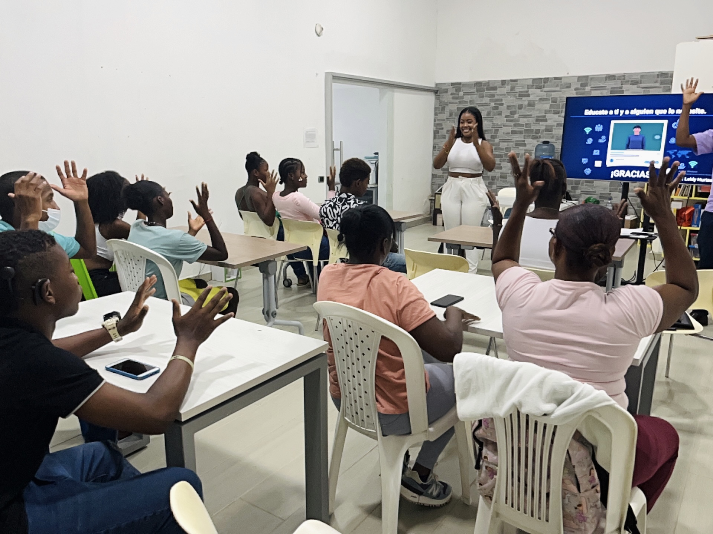
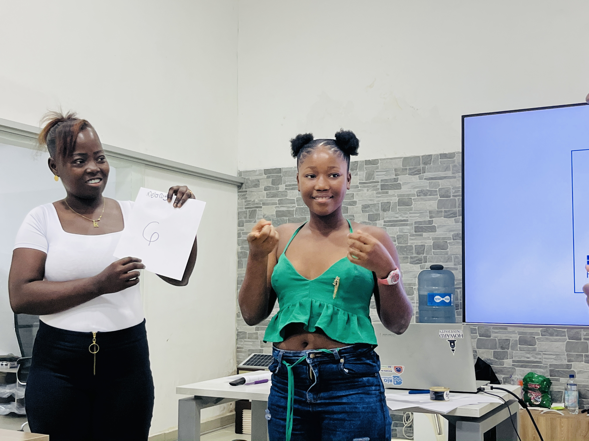

beneficios

Cada suscripción por persona, le dará la posibilidad a alguien de escasos recursos a acceder gratuitamente.

Paquetes multiusuarios para entidades como colegios, ONGs y programas de inclusión para personas sordas.

Contenido personalizado disponible 24/7. Certificación por cada nivel aprobado.